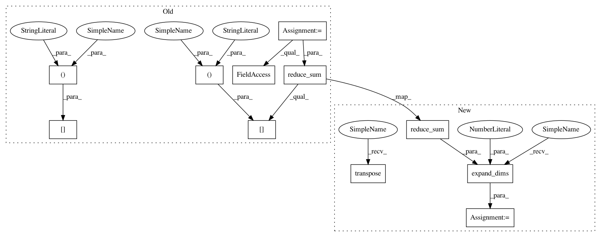

956ac38fd58a1ef65c18dffc06a22d2e628e3a16,GPflow/conditionals.py,,gaussian_gp_predict_whitened,#Any#Any#Any#Any#Any#,141
Before Change
//compute kernel stuff
num_data = X.shape[0]
Kdiag = kern.Kdiag(Xnew)
Kmn = kern.K(X, Xnew)
Kmm = kern.K(X) + eye(num_data)*1e-4
Lm = tf.cholesky(Kmm)
//this is O(N M^2)
A = tf.user_ops.triangular_solve(Lm, Kmn, "lower")
//construct the mean and variance of q(f)
fmean = tf.matmul(tf.transpose(A), q_mu)
if q_sqrt.get_shape().ndims==2:
//we hae a diagonal form for q(v)
q_var = np.square(q_sqrt)
//fvar = Kdiag[:,None] + tf.reduce_sum((tf.square(tf.transpose(A)))[:,:,None] * (q_var[None, :,:] - 1),1)
fvar = tf.reshape(Kdiag, (-1,1)) + tf.reduce_sum(tf.reshape(tf.square(tf.transpose(A)), )[:,:,None] * (q_var[None, :,:] - 1),1)
elif q_sqrt.get_shape().ndims ==3:
// we have the cholesky form for q(v)
fvar = Kdiag[:,None] - tf.reduce_sum(np.square(A), 0)[:,None]
def f(w):
R = tf.triu(w)
RA = tf.matmul(R, A)
return tf.square(RA).sum(0)
After Change
fvar = tf.reshape(Kdiag, (-1,1)) + tf.reduce_sum(tf.reshape(tf.square(tf.transpose(A)), )[:,:,None] * (q_var[None, :,:] - 1),1)
elif q_sqrt.get_shape().ndims ==3:
// we have the cholesky form for q(v)
fvar = Kdiag - tf.reduce_sum(np.square(A), 0)
fvar = tf.expand_dims(fvar, 1)
def f(w):
R = tf.triu(w)
RA = tf.matmul(R, A)
return tf.square(RA).sum(0)
projected_var, _ = theano.scan(f, q_sqrt.swapaxes(0,2))
fvar += tf.transpose(projected_var)
return fmean, fvar
In pattern: SUPERPATTERN
Frequency: 3
Non-data size: 11
Instances
Project Name: GPflow/GPflow
Commit Name: 956ac38fd58a1ef65c18dffc06a22d2e628e3a16
Time: 2016-01-18
Author: james.hensman@gmail.com
File Name: GPflow/conditionals.py
Class Name:
Method Name: gaussian_gp_predict_whitened
Project Name: GPflow/GPflow
Commit Name: 956ac38fd58a1ef65c18dffc06a22d2e628e3a16
Time: 2016-01-18
Author: james.hensman@gmail.com
File Name: GPflow/conditionals.py
Class Name:
Method Name: gp_predict
Project Name: GPflow/GPflow
Commit Name: 956ac38fd58a1ef65c18dffc06a22d2e628e3a16
Time: 2016-01-18
Author: james.hensman@gmail.com
File Name: GPflow/conditionals.py
Class Name:
Method Name: gaussian_gp_predict